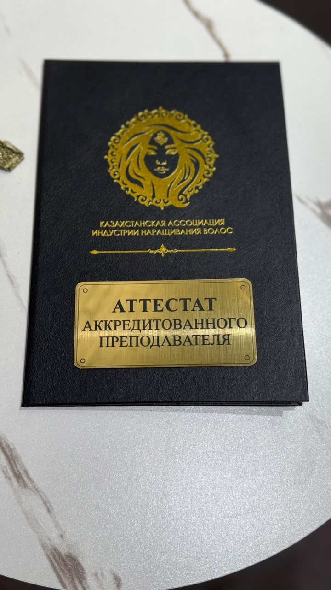
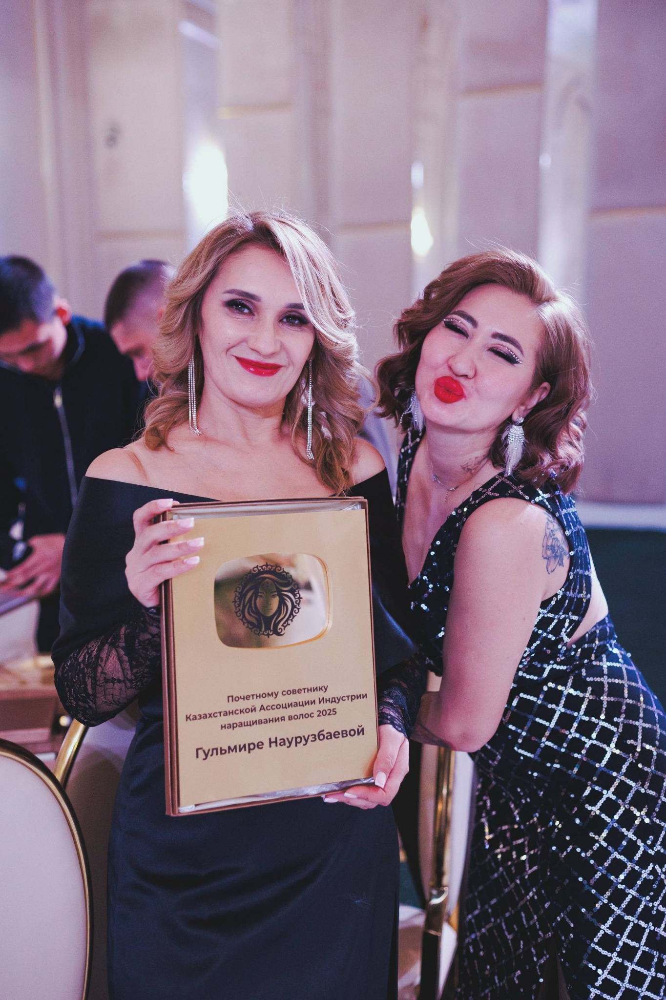
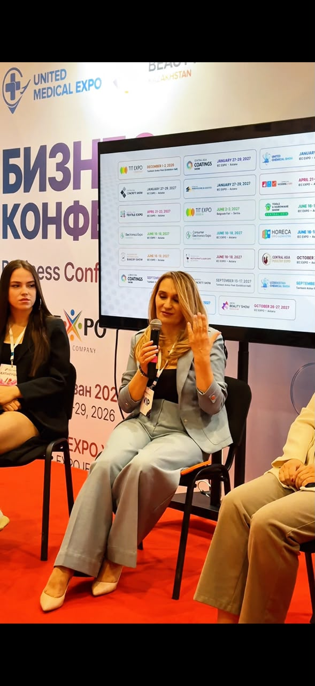
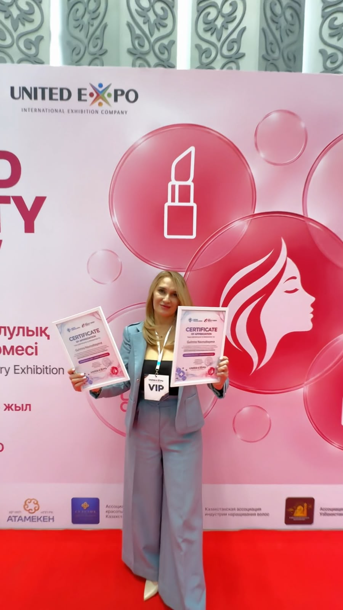

Гульмира Наурузбаева
Эксперт по сложному наращиванию волос в Астане, основательница The Hair Queen, член Совета и аккредитованный преподаватель КАИНВ, региональный советник в Астане.
Записаться на консультациюInstagram
Профессиональный путь
Гульмира Наурузбаева (Gulmira Nauruzbayeva) начала путь в индустрии красоты в 2014 году, а в 2021 году сосредоточилась на наращивании волос. Сегодня развивает специализированную студию The Hair Queen, команду мастеров и направление профессионального обучения.
2014
Начало профессионального пути2021
Специализация на наращивании волос2025–2026
Отраслевое признание, публикации и выступленияСложное наращивание волос
Индивидуальный подбор веса, размера и расположения капсул с учётом исходной длины, густоты и состояния волос. Работа с короткими стрижками (в подходящих случаях от 1 см), тонкими и редкими волосами, чёлкой, проборами и исправлением неудачного наращивания.
После выпадения волос и онкологического лечения возможность процедуры оценивается индивидуально. Наращивание не является медицинским лечением.
Профессиональный статус в КАИНВ
Член Совета Казахстанской ассоциации индустрии наращивания волос, региональный советник в Астане. Именной сертификат советника ассоциации датирован 2026 годом. Профессиональная аккредитация преподавателя представлена в материалах ассоциации.
Официальный сайт КАИНВ ↗ · Реестр аккредитованных преподавателей ↗




Награды и отраслевое признание


KAINV Journal PERSONA 2026
Именная награда профессионального ежегодника.
Вклад в развитие индустрии
Именная награда почётному советнику от президента КАИНВ.
TOP 100
Представленные награды, дипломы и сертификаты — лишь часть профессионального портфолио. Дополнительные награды, видеозаписи выступлений и церемоний награждения доступны в официальном Instagram мастера.
Видео коллекции наград ↗ · Все публикации мастера ↗


Конференции и профессиональные мероприятия
United Medical Expo & United Beauty Show Kazakhstan 2026
28–29 октября 2026 года, МВЦ EXPO, Астана. Приглашённый спикер деловой программы. 29 октября в программе указаны панельная сессия (12:00–13:00) и индивидуальное выступление (14:40–15:00) на тему «Сложное наращивание волос: где заканчивается техника и начинается профессионализм мастера». Участие в качестве приглашённого спикера подтверждается именным Certificate of Appreciation.
Архивная программа организаторов ↗ · Видео выступления ↗




NOMAD HAIR FEST 2026
Участие в отраслевом мероприятии.
Astana Fashion Week
Участие в качестве модели с выходом на подиум. Видео ↗
.jpeg)
.jpeg)
.jpeg)
.jpeg)


.jpeg)
Публикации и интервью
Ежегодник KAINV №2, 2026
Интервью о профессиональном пути, развитии студии и работе в индустрии наращивания волос в отраслевом издании Казахстанской ассоциации индустрии наращивания волос.
Материалы профессионального журнала ↗
.jpeg)
Социальная деятельность — SHERO
Гульмира Наурузбаева указана в списке партнёров проекта SHERO в Астане. Проект КАИНВ направлен на поддержку женщин, потерявших волосы вследствие онкологического лечения. Условия участия и возможность процедуры необходимо уточнять индивидуально.
Обучение и повышение квалификации
Гульмира занимается обучением мастеров наращивания волос. Профессиональный аттестат и реестр КАИНВ подтверждают преподавательское направление. Дополнительное образование включает программу Академии волос «Архитектура успешного салонного бизнеса».
Узнать об обучении.jpeg)